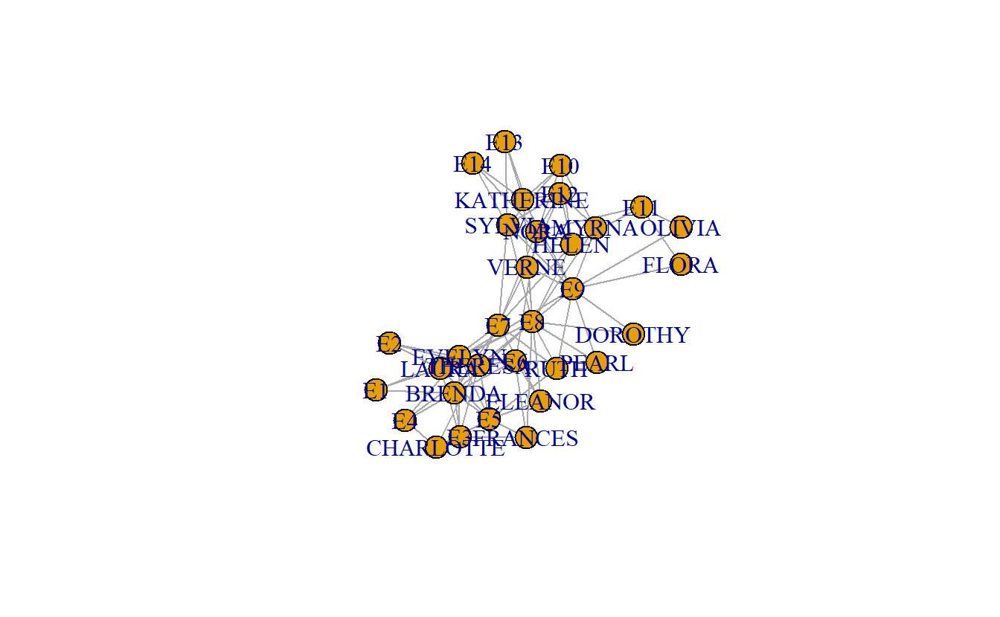

3 Importing and Visualizing One- and Two-Mode Social Network Data in igraph
In this lab we’ll explore a variety of methods for importing social network data into R, manipulating one- and two-mode network data, and visualizing social networks. We’ll be using a variety of social networks, some of which you’ll recognize from other classes. We’ll also illustrate a variety of ways to import network data, something that should be easy to do but often turns out to be challenging because a number of resources jump over this important step.
Note: This lab has gone through many iterations and reflects the influence from a variety of individuals, including Phil Murphy, and Brendan Knapp.
3.1 Setup
Find and open your RStudio Project associated with this class. Begin by opening a new script. It’s generally a good idea to place a header at the top of your scripts that tell you what the script does, its name, etc.
#######################################################################
# What: Importing and Visualizing One- and Two-Mode Social Network Data
# File: lab1_igraph.R
# Created: 02.28.14
# Revised: 12.22.21
#######################################################################If you have not set up your RStudio Project to clear the workspace on exit, your environment contain the objects and functions from your prior session. To clear these before beginning use the following command.
rm(list = ls())Proceed to place the data required for this lab (davis.csv, davis.net, davisedge.csv, Koschade Bali (Edge).csv, Koschade Bali (Matrix).csv, and Koschade Bali.net) also inside your R Project folder. We have placed it in a sub folder titled data for organizational purposes; however, this is not necessary.
3.2 Load Libraries
We need to load the libraries we plan to use. Here we will use igraph. Because igraph and statnet conflict with one another sometimes, we do not want to have them loaded at the same time, so you may want to detach it. Alternatively, you may choose to namespace functions using the :: operator as needed (e.g., igraph::betweenness() vs. sna::betweenness()). Of course, this applies only if you had the statnet package loaded already. The intergraph package allows users to transform network data back and forth between igraph and statnet.
# If you haven't done so, install the required packages:
# install.packages("igraph")
# install.packages("intergraph")
# Now load them:
library(igraph)
library(intergraph)Note: igraph imports the %>% operator on load (library(igraph)). This series of exercises leverages the operator because we find it very useful in chaining functions.
3.3 One-mode Social Network Data in igraph: Koschade Network
Here, we will use data collected by Stuart Koschade of the 17 individuals who participated in the first Bali bombing. Koschade (2006) recorded both the ties between the individuals, as well as the strength of the tie between them.
3.3.2 Plotting (Visualizing) the Koschade Network
Here’s a simple plot using igraph.
plot(koschade1_ig)
# Note that you can also plot the other two graph:
# plot(koschade2_ig)
# plot(koschade3_ig)Let’s try making some more sophisticated plots. Before we do that, however, let’s save the coordinates so that the remaining plots will have the same layout. Here, we will use the Fruchterman Reingold layout algorithm (layout_with_kk()).
coords <- layout_with_fr(koschade1_ig)Now, visualize the network with some additional parameters, such as changing the node color (i.e., vertex.color), the label size (i.e., vertex.label.cex), and the node label color (i.e., vertex.label.color). From here on out, we’ll just use the koschade1_ig network.
plot(koschade1_ig,
layout = coords,
vertex.color = "Skyblue2",
vertex.label.cex = .6,
vertex.label.color = "black")
Now, let’s size the edges by tie strength and plot again.
plot(koschade1_ig,
layout = coords,
vertex.color = "Skyblue2",
vertex.label.cex = .6,
vertex.label.color = "black",
# Recall the edge weight vector previously created
edge.width = edge_weight_1)
Note that the layout above is the same as the previous layout. This is helpful when presenting successive graphs in your papers and theses. It makes it easier for readers to compare the network graphs.
We can also change the edges to curved edges.
plot(koschade1_ig,
layout = coords,
vertex.color = "Skyblue2",
vertex.label.cex = .6,
vertex.label.color = "black",
edge.width = edge_weight_1,
edge.curved = TRUE)
3.3.3 Saving Network Plots (e.g., pdf, jpeg, png, tiff)
Save final plot in various formats.
Begin by saving the output in PDF format. To do such, use the pdf() function, which starts the graphics driver for producing PDFs.
# Start the graphic driver, name output file, and set size
pdf(file = "koschade1.pdf",
width = 4, height = 4)
# Plot the output into the file
plot(koschade1_ig,
layout = coords,
vertex.color = "Skyblue2",
vertex.label.cex = .6,
vertex.label.color = "black",
edge.width = edge_weight_1)
# Turn off the graphics driver
dev.off()To store the image as a JPEG, use the jpeg() function. The bg = "transparent option saves the graphs with a transparent background (rather than white), which can be helpful when placing in slides or on non-white backgrounds.
jpeg(file = "koschade1.jpg",
width = 4, height = 4,
units = 'in',
res = 600,
bg = "transparent")
plot(koschade1_ig,
layout = coords,
vertex.color = "Skyblue2",
vertex.label.cex = .6,
vertex.label.color = "black",
edge.width = edge_weight_1)
dev.off()To store the image as a PNG, use the png() function.
png(file = "koschade1.png",
width = 4, height = 4,
units = 'in',
res = 300,
bg = "transparent")
plot(koschade1_ig,
layout = coords,
vertex.color = "Skyblue2",
vertex.label.cex = .6,
vertex.label.color = "black",
edge.width = edge_weight_1)
dev.off()To store the image as a TIFF, use the tiff() function.
tiff(file = "koschade3.tif",
width = 4, height = 4,
units = 'in',
res = 300,
bg = "transparent")
plot(koschade1_ig,
layout = coords,
vertex.color = "Skyblue2",
vertex.label.cex = .6,
vertex.label.color = "black",
edge.width = edge_weight_1)
dev.off()3.3.4 Saving Network Data
Finally, it doesn’t hurt to save the data that you’ve imported and created. Perhaps not all (e.g., coordinates) but it is helpful to save those that you may want to use in another setting.
save(koschade_dat,
koschade_mat,
koschade1_ig,
koschade2_ig,
koschade3_ig,
file = "koschade_igraph.RData")3.4 Two-mode Social Network Data in igraph: Davis Southern Women
We will now switch to another data set to import, manipulate, and visualize two-mode network data in igraph. The data that we will use here is what is known as Davis’ Southern Club Women. Davis and her colleagues recorded the observed attendance of 18 Southern women at 14 different social events.
3.4.2 Plotting Two-Mode Social Network Data in igraph
Like with one-mode data, two-mode data can be plotted using igraph. Once again, we can use the plot() function to graph igraph objects.
plot(davis1_ig)
Once again, we can store the coordinates as a separate object and use it to compare networks. Here we will plot networks side-by-side using the par() function. Additionally, we can make some aesthetic improvements through adding arguments (e.g., vertex.label.cex, etc.).
# Set graph parameters to 1 row and 3 columns
par(mfrow = c(1, 3))
# Store node coordinates
coordfr <- layout_with_fr(davis1_ig)
# Plot graphs
plot(davis1_ig,
layout = coordfr,
vertex.label.cex = 0.6,
vertex.label.color = "black")
plot(davis2_ig,
layout = coordfr,
vertex.label.cex = 0.6,
vertex.label.color="black")
plot(davis3_ig,
layout = coordfr,
vertex.label.cex = 0.6,
vertex.label.color="black")
Now, let’s make a few adjustments to the graph; for instance, we can change the node colors to “light blue” and “yellow” to reflect node types. First, we need to determine what nodes belong to which mode.
davis1_ig %>%
# Pull node list, which should include a 'type' node attribute
get.data.frame("vertices") %>%
# Cross tabulate the 'name' and 'type' variables
table()## name
## type BRENDA CHARLOTTE DOROTHY E1 E10 E11 E12 E13 E14 E2 E3 E4 E5 E6 E7 E8 E9
## FALSE 1 1 1 0 0 0 0 0 0 0 0 0 0 0 0 0 0
## TRUE 0 0 0 1 1 1 1 1 1 1 1 1 1 1 1 1 1
## name
## type ELEANOR EVELYN FLORA FRANCES HELEN KATHERINE LAURA MYRNA NORA OLIVIA
## FALSE 1 1 1 1 1 1 1 1 1 1
## TRUE 0 0 0 0 0 0 0 0 0 0
## name
## type PEARL RUTH SYLVIA THERESA VERNE
## FALSE 1 1 1 1 1
## TRUE 0 0 0 0 0The output indicates that the women are assigned to the FALSE category, while the events fall under TRUE. Thus, we can assign colors using a conditional statement (e.g., ifelse()).
plot(davis1_ig,
layout = coordfr,
# Get the vertex attribute vector, if the attribute is TRUE assign 'yellow'
# as the vertex color. Otherwise, assign 'lightblue'.
vertex.color = ifelse(get.vertex.attribute(davis1_ig, name = "type"),
"yellow", "lightblue"),
vertex.label.cex = 0.6,
vertex.label.color="black")
Now, re-plot the networks with the new colors and save the coordinate while we’re at it.
# Set graph parameters to 1 row and 3 columns
par(mfrow = c(1, 3))
# Plot graphs
plot(davis1_ig,
layout = coordfr,
vertex.color = ifelse(get.vertex.attribute(davis1_ig, name = "type"),
"yellow", "lightblue"),
vertex.label.cex = 0.6,
vertex.label.color = "black",
vertex.size = 10)
plot(davis2_ig,
layout = coordfr,
vertex.color = ifelse(get.vertex.attribute(davis2_ig, name = "type"),
"yellow", "lightblue"),
vertex.label.cex = 0.6,
vertex.label.color = "black",
vertex.size = 10)
plot(davis3_ig,
layout = coordfr,
vertex.color = ifelse(get.vertex.attribute(davis3_ig, name = "type"),
"yellow", "lightblue"),
vertex.label.cex = 0.6,
vertex.label.color = "black",
vertex.size = 10)
We may want to rescale nodes to reflect those with more adjacent nodes. To do so, we can use the degree() function to calculate a node’s degree centrality. If this measure is not familiar to you yet, don’t worry, we will expand on this topic later in the class.
degree(davis1_ig)## EVELYN LAURA THERESA BRENDA CHARLOTTE FRANCES ELEANOR PEARL
## 8 7 8 7 4 4 4 3
## RUTH VERNE MYRNA KATHERINE SYLVIA NORA HELEN DOROTHY
## 4 4 4 6 7 8 5 2
## OLIVIA FLORA E1 E2 E3 E4 E5 E6
## 2 2 3 3 6 4 8 8
## E7 E8 E9 E10 E11 E12 E13 E14
## 10 14 12 5 4 6 3 3As you can see, the output of the degree() function is a named vector with a score for the number of edges a given node has. Now, let’s calculate degree centrality and then plot the graphs again but adjust the node size to reflect degree which we’ve rescaled in order to make the nodes more visible.
# Set graph parameters to 1 row and 3 columns
par(mfrow = c(1, 3))
# Plot graphs
plot(davis1_ig,
layout = coordfr,
vertex.color = ifelse(get.vertex.attribute(davis1_ig, name = "type"),
"yellow", "lightblue"),
vertex.label.cex = 0.6,
vertex.label.color = "black",
vertex.size = degree(davis1_ig))
plot(davis2_ig,
layout = coordfr,
vertex.color = ifelse(get.vertex.attribute(davis2_ig, name = "type"),
"yellow", "lightblue"),
vertex.label.cex = 0.6,
vertex.label.color = "black",
vertex.size = degree(davis2_ig))
plot(davis3_ig,
layout = coordfr,
vertex.color = ifelse(get.vertex.attribute(davis3_ig, name = "type"),
"yellow", "lightblue"),
vertex.label.cex = 0.6,
vertex.label.color = "black",
vertex.size = degree(davis3_ig))
3.4.3 Projecting (Folding) Two-Mode Networks into One-Mode Networks in igraph
For this section, we will just work with the davis1_ig network object.
3.4.3.1 Multiplying Matrices
To transform the network into two one-mode networks, we first convert the two-mode igraph object to a matrix. The key function here is get.incidence(). Note the first command makes sure that the matrix has labels once it is transformed.
davis1_mat <- davis1_ig %>%
# Set vertex attribute 'id' using the 'name' attribute
set_vertex_attr(name = "id",
value = V(.)$name) %>% # The . represents davis1_ig
get.incidence()View the matrix:
davis1_matNext, multiply the matrices by their transpose. To do so, we use the %*% operator to multiply networks and the t() function to transpose one matrix during the multiplication.
First, let’s create a one-mode matrix of women-to-women based on shared events/
davis_women_mat <- davis1_mat %*% t(davis1_mat)Repeat the process, this time switch the order of the transposed matrix to generate an events-to-events matrix.
davis_events_mat <- t(davis1_mat) %*% davis1_matTake a look at one or both of the matrices:
# Woman-to-woman matrix
davis_women_mat
# Event-to-event matrix
davis_events_matWith the matrices projected, you can now convert both to igraph objects using the graph.adjacency() function.
davis_women_ig <- graph.adjacency(davis_women_mat,
mode = "undirected",
weighted = TRUE)The next step is to remove loops and multiple edges; that is acomplished using the simplify() function.
davis_women_ig <- simplify(davis_women_ig,
remove.multiple = TRUE,
remove.loops = TRUE,
edge.attr.comb = sum)
davis_women_ig## IGRAPH 3375917 UNW- 18 139 --
## + attr: name (v/c), weight (e/n)
## + edges from 3375917 (vertex names):
## [1] EVELYN --LAURA EVELYN --THERESA EVELYN --BRENDA EVELYN --CHARLOTTE
## [5] EVELYN --FRANCES EVELYN --ELEANOR EVELYN --PEARL EVELYN --RUTH
## [9] EVELYN --VERNE EVELYN --MYRNA EVELYN --KATHERINE EVELYN --SYLVIA
## [13] EVELYN --NORA EVELYN --HELEN EVELYN --DOROTHY EVELYN --OLIVIA
## [17] EVELYN --FLORA LAURA --THERESA LAURA --BRENDA LAURA --CHARLOTTE
## [21] LAURA --FRANCES LAURA --ELEANOR LAURA --PEARL LAURA --RUTH
## [25] LAURA --VERNE LAURA --MYRNA LAURA --KATHERINE LAURA --SYLVIA
## [29] LAURA --NORA LAURA --HELEN LAURA --DOROTHY THERESA--BRENDA
## + ... omitted several edgesKeep in mind that many steps can be put into a pipeline to reduce the lines of code.
davis_events_ig <- graph.adjacency(davis_events_mat,
mode = "undirected",
weighted = TRUE) %>%
simplify(remove.multiple = TRUE, remove.loops = TRUE,
edge.attr.comb = sum)
davis_events_ig## IGRAPH 337a4c6 UNW- 14 66 --
## + attr: name (v/c), weight (e/n)
## + edges from 337a4c6 (vertex names):
## [1] E1 --E2 E1 --E3 E1 --E4 E1 --E5 E1 --E6 E1 --E7 E1 --E8 E1 --E9
## [9] E2 --E3 E2 --E4 E2 --E5 E2 --E6 E2 --E7 E2 --E8 E2 --E9 E3 --E4
## [17] E3 --E5 E3 --E6 E3 --E7 E3 --E8 E3 --E9 E4 --E5 E4 --E6 E4 --E7
## [25] E4 --E8 E4 --E9 E5 --E6 E5 --E7 E5 --E8 E5 --E9 E6 --E7 E6 --E8
## [33] E6 --E9 E6 --E10 E6 --E11 E6 --E12 E6 --E13 E6 --E14 E7 --E8 E7 --E9
## [41] E7 --E10 E7 --E11 E7 --E12 E7 --E13 E7 --E14 E8 --E9 E8 --E10 E8 --E11
## [49] E8 --E12 E8 --E13 E8 --E14 E9 --E10 E9 --E11 E9 --E12 E9 --E13 E9 --E14
## [57] E10--E11 E10--E12 E10--E13 E10--E14 E11--E12 E11--E13 E11--E14 E12--E13
## + ... omitted several edges3.4.3.2 Projecting Two-Mode igraph Graphs
Beyond multiplying matrices, the process of transforming two-mode data to one-mode can be fully accomplished using functions from the igraph library.
Remember that two-mode graph objects in igraph have a type vertex attribute, which can be called using the get.vertex.attribute() and can be used (under the hood) to determine if a graph is two-mode using the is_biparite().
# Pull 'type' vertex attribute
get.vertex.attribute(davis1_ig, name = "type")
# Test if it is two-mode
is_bipartite(davis1_ig)If a graph is in fact two mode, we can transform it to one-mode using the bipartite_projection() function.
The events are assigned to the TRUE mode. As such, we can specify which mode will be extracted from the two-mode network setting the which argument to true
davis_events_ig <- bipartite_projection(davis1_ig, which = "true")
davis_events_ig## IGRAPH 3382149 UNW- 14 66 --
## + attr: name (v/c), weight (e/n)
## + edges from 3382149 (vertex names):
## [1] E1 --E2 E1 --E3 E1 --E4 E1 --E5 E1 --E6 E1 --E8 E1 --E9 E1 --E7
## [9] E2 --E3 E2 --E4 E2 --E5 E2 --E6 E2 --E8 E2 --E9 E2 --E7 E3 --E4
## [17] E3 --E5 E3 --E6 E3 --E8 E3 --E9 E3 --E7 E4 --E5 E4 --E6 E4 --E8
## [25] E4 --E9 E4 --E7 E5 --E6 E5 --E8 E5 --E9 E5 --E7 E6 --E8 E6 --E9
## [33] E6 --E7 E6 --E10 E6 --E11 E6 --E12 E6 --E13 E6 --E14 E7 --E8 E7 --E9
## [41] E7 --E12 E7 --E10 E7 --E13 E7 --E14 E7 --E11 E8 --E9 E8 --E12 E8 --E10
## [49] E8 --E13 E8 --E14 E8 --E11 E9 --E12 E9 --E10 E9 --E13 E9 --E14 E9 --E11
## [57] E10--E12 E10--E13 E10--E14 E10--E11 E11--E12 E11--E13 E11--E14 E12--E13
## + ... omitted several edgesNow extract the women one-mode network setting the which argument to false in the bipartite_projection() function.
davis_women_ig <- bipartite_projection(davis1_ig, which = "false")
davis_women_ig## IGRAPH 3386346 UNW- 18 139 --
## + attr: name (v/c), weight (e/n)
## + edges from 3386346 (vertex names):
## [1] EVELYN --LAURA EVELYN --BRENDA EVELYN --THERESA EVELYN --CHARLOTTE
## [5] EVELYN --FRANCES EVELYN --ELEANOR EVELYN --RUTH EVELYN --PEARL
## [9] EVELYN --NORA EVELYN --VERNE EVELYN --MYRNA EVELYN --KATHERINE
## [13] EVELYN --SYLVIA EVELYN --HELEN EVELYN --DOROTHY EVELYN --OLIVIA
## [17] EVELYN --FLORA LAURA --BRENDA LAURA --THERESA LAURA --CHARLOTTE
## [21] LAURA --FRANCES LAURA --ELEANOR LAURA --RUTH LAURA --PEARL
## [25] LAURA --NORA LAURA --VERNE LAURA --SYLVIA LAURA --HELEN
## [29] LAURA --MYRNA LAURA --KATHERINE LAURA --DOROTHY THERESA--BRENDA
## + ... omitted several edges3.4.4 Plotting Projected One-Mode Networks
Now that we have extracted the one-mode networks, plot the two new graphs using plot() and the additional arguments used previously.
# Set graph parameters to 1 row and 2 columns
par(mfrow = c(1, 2))
# Store node coordinates
coords_women <- layout_with_fr(davis_women_ig)
coords_events <- layout_with_fr(davis_events_ig)
# Plot graphs
plot(davis_women_ig,
layout = coords_women,
vertex.color = "light blue",
vertex.label.cex = 0.6,
vertex.label.color = "black",
vertex.size = degree(davis_women_ig))
plot(davis_events_ig,
layout = coords_events,
vertex.color = "yellow",
vertex.label.cex = 0.6,
vertex.label.color = "black",
vertex.size = degree(davis_events_ig))
3.4.5 Saving Network Plots
Now, save plots of the two-mode network and the two one-mode networks produced.
png(file = "davis1.png",width = 4,height = 4,units = 'in', res = 300,
bg = "transparent")
plot(davis1_ig,
layout = coordfr,
vertex.color = ifelse(get.vertex.attribute(davis1_ig, name = "type"),
"yellow", "lightblue"),
vertex.label.cex = 0.6,
vertex.label.color = "black",
vertex.size = degree(davis1_ig))
dev.off()
png(file = "daviswomen.png",width = 4,height = 4,units = 'in',res = 300,
bg = "transparent")
plot(davis_women_ig,
layout = coords_women,
vertex.color = "light blue",
vertex.label.cex = 0.6,
vertex.label.color = "black",
vertex.size = degree(davis_women_ig))
dev.off()
png(file = "davisevents.png",width = 4,height = 4,units = 'in',res = 300,
bg = "transparent")
plot(davis_events_ig,
layout = coords_events,
vertex.color = "yellow",
vertex.label.cex = 0.6,
vertex.label.color = "black",
vertex.size = degree(davis_events_ig))
dev.off()3.4.6 Saving Network Data
Once again, it doesn’t hurt to save the data that you’ve imported and created.
save(davis_mat,
davis1_mat,
davis1_ig,
davis2_ig,
davis3_ig,
davis_events_ig,
davis_events_mat,
davis_women_ig,
davis_women_mat,
file = "data/davis_igraph.RData")That’s all (for igraph) for now.